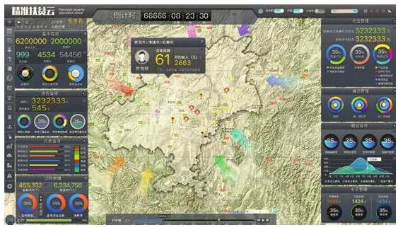

工信部教育与考试中心、中国商业联合会数据分析委员会贵州省管理中心
报名电话：0851—88612627 全国监督电话：400-050-6600 邮件地址：3269724802@qq.com
报名地址：贵州省贵阳市云岩区北京路银海元隆广场11栋3704。
“达康书记别低头，GDP会掉”
“达康书记别流泪，祁厅长会笑”
……
最近，你有没有被一组“达康书记”的表情包刷屏
随着反腐大片《人民的名义》爆红网络
那个忧心GDP的“达康书记”也火了

《人民的名义》播出到第16集时，达康书记带省委书记沙瑞金一起参观东汇集团。

浪潮云眼是个什么鬼？
浪潮云眼融合了数据采集与处理、大数据分析平台、虚拟现实、地理信息等多项技术，是面向企业高层打造的可视化产品，支持可视化管理和“挂图作战”，实现即时洞察、清晰决策，助力企业全面实现数字化转型。
在政府宏观经济监管、社会服务与治理领域，浪潮云眼同样可以大展拳脚。如果达康书记要开展精准扶贫，就可以利用浪潮云眼，全面、动态地掌控扶贫项目实施与资金的使用进度情况，保障扶贫项目精准到位、合理开发，保障财政专项扶贫资金安全、有效地运行，最大程度发挥扶贫资金的使用效益。
浪潮云眼这么厉害
究竟采用哪些技术
请往下看↓
通过响应式布局和个别定制结合，浪潮云眼支持电脑、PAD、手机等各种类型的智能终端，还支持分辨率高至 17280×3240的超大尺寸屏幕展示。

浪潮云眼采用数据采集与处理技术，通过大数据分析平台，将采集的传感器、视频、文字、图片、设备等实时数据，和财务、销售、采购、人力等经营数据打通，让挂图作战提供更加完备的数据信息。
利用GIS（地理信息技术），浪潮云眼将企业内外部的数据信息，采用三维地图、触摸系统、语音合成等转化成更直观的反映形式，让高层领导对宏观经济拥有动态性、整体性的了解。汇报、开会时使用沙盘对着数据讨论，就如同司令员在沙盘上指挥千军万马。

浪潮云眼借助虚拟现实技术，生成现场的模拟环境，实现三维动态视景和实体行为的系统仿真，直观展示高维数据，让使用者仿佛身临其境。

目前大数据技术已经运用到各领域，其中数据分析技术起到关键性因素，数据分析师是大数据时代不可或缺的人才。大数据，用起来。
所以，达康书记请放心
GDP，我们一起来守护